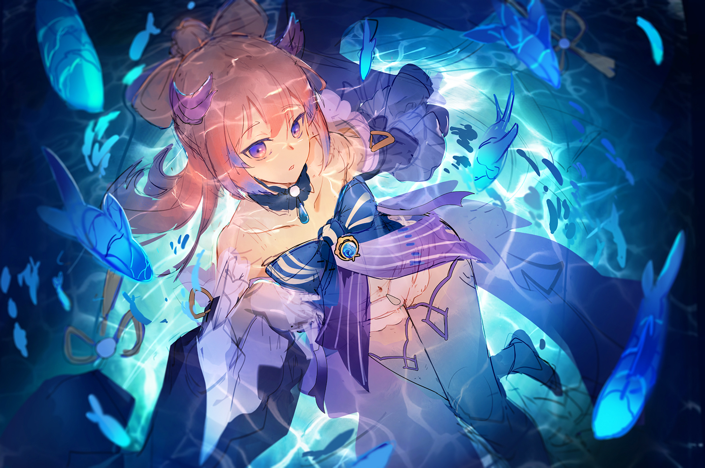
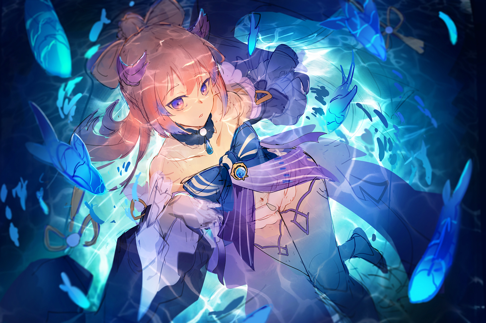

Alex Chen is a freelance Illustrator and Designer based in Vancouver, British Columbia.
Brimming with curiosity and a love for painting, you can always expect to see him working on a brand new project to satisfy his drawing mind.
Work
Freelance Illustration (2018 - Current)
Project CERIS Illustration (2018)
Fanzine Illustrations (2019-2021)
Virtual Avatar Illustration Internship (2021)
 
